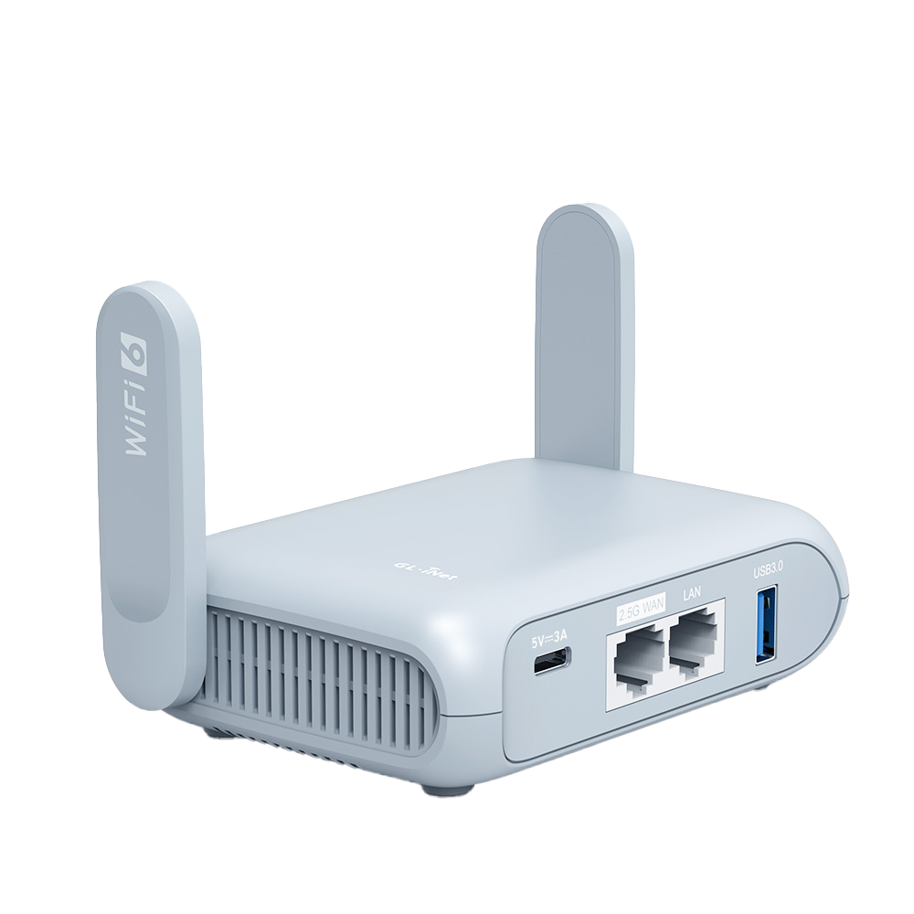
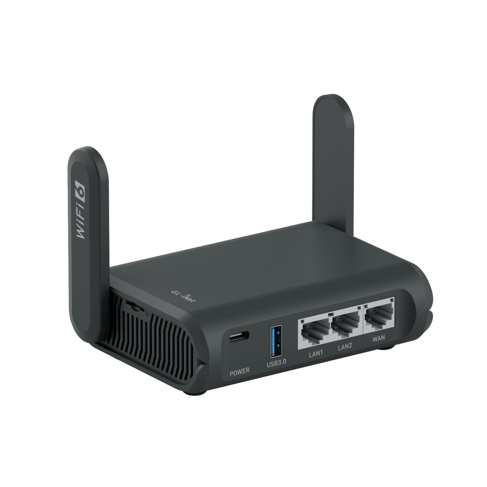
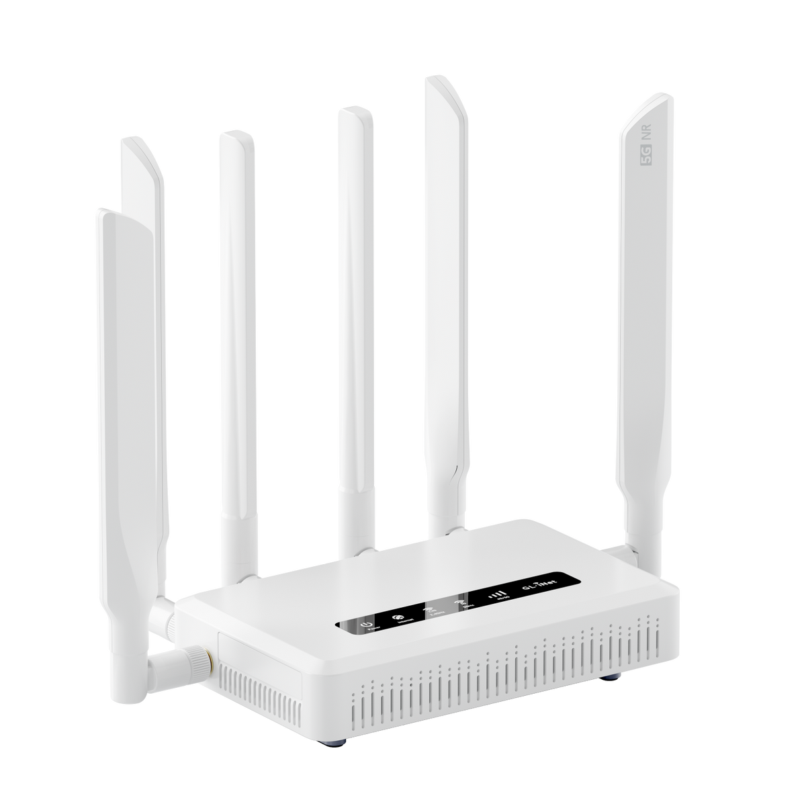

Guide · OpenWrt
Best GL.iNet travel router with OpenWrt (2026)
GL.iNet makes more travel routers than anyone else, and every one of them runs OpenWrt underneath. That matters if your home network is open source: the same router you pack for a trip can run WireGuard, Tailscale, ad blocking and the rest of the packages you already know. The question is which model, and whether to keep GL.iNet's stock firmware or flash vanilla OpenWrt from openwrt.org. For most trips the GL-MT3000 (Beryl AX) is the best pick: a pocket-sized Wi-Fi 6 AX3000 travel router, with official vanilla OpenWrt builds for both current releases and VPN support out of the box. We checked every candidate against the OpenWrt table of hardware, so the support claims below come from OpenWrt's own device database, refreshed November 2026, not from marketing pages.
If you are new to OpenWrt itself, start with our what is OpenWrt guide, and for how a multi-router open-source network fits together at home, Adam's OpenWrt mesh network story is the pillar for this cluster.
Stock GL.iNet firmware vs vanilla OpenWrt
Every GL.iNet router ships with firmware built on OpenWrt, plus a custom GL.iNet admin panel on top. That panel is aimed at ordinary users: a guided interface for connecting to hotel Wi-Fi, toggling a VPN client, and setting up WireGuard or OpenVPN. Behind it is still a Linux router, and the GL.iNet documentation covers WireGuard server and client modes and even Tailscale tutorials in the 4.x docs.
Vanilla OpenWrt is the other road. You flash an official build from openwrt.org, and the router behaves like any other OpenWrt device: standard LuCI interface, official packages only, and upgrades that follow OpenWrt's release calendar — currently 24.10.8 as the old stable line and 25.12.6 as the current stable snapshot. Vanilla support is per-model and per-release, so we took it directly from the OpenWrt table of hardware rather than from GL.iNet. For each model below we link the OpenWrt device page in the format openwrt.org uses, e.g. https://openwrt.org/toh/gl.inet/gl_mt3000, and the firmware selector there lists the exact image for your release.
One gotcha worth stating plainly: the newest GL.iNet models are not all in the official vanilla table yet. The GL-MG1300 (Mango 2), GL-E5800 (Mudi 7) and GL-BE3600 (Slate 7) appear in GL.iNet's own OpenWrt-tutorial device list but have no official vanilla OpenWrt build in the current table snapshot, and neither does the GL-SFT1200 (Opal). Buy those knowing you are staying on stock firmware.
Picks by trip type
Best overall: GL-MT3000 (Beryl AX)

GL.iNet describes the Beryl AX as a "pocket-sized AX3000 Wi-Fi 6 Travel Router" with Wi-Fi 6, WireGuard, OpenVPN and encrypted DNS — its product page is the source for those specs. It is the sweet spot for hotel and conference use: small, fast enough to carry a laptop plus phones and a tablet, and it has official vanilla OpenWrt builds for both 24.10.8 and 25.12.6, listed as mediatek/filogic in the table of hardware. GL-MT3000 Beryl AX on Amazon.
Best if you want Wi-Fi 7: GL-MT3600BE (Beryl 7)
The Beryl 7 is a dual-band Wi-Fi 7 travel router in GL.iNet's lineup. In the official OpenWrt table it has a 25.12.6 build (mediatek/filogic) and no 24.10.8 build in the current snapshot, so on vanilla OpenWrt it is current-stable only. If you will not leave stock firmware, that constraint does not apply. Source: GL.iNet Beryl 7 product page and the OpenWrt table of hardware. GL-MT3600BE Beryl 7 on Amazon.
Best if you need Wi-Fi 6 more than Wi-Fi 7 but want an extra-compact box: GL-AXT1800 (Slate AX)

The Slate AX is a Wi-Fi 6 dual-band travel router with VPN support and MU-MIMO, per GL.iNet's page. The vanilla-OpenWrt caveat is unusual: in the current table it shows an official build for 25.12.6 only, with no 24.10.8 entry. If you flash vanilla, you are on the current stable release; on stock GL.iNet firmware it is an ordinary supported device. OpenWrt device page. GL-AXT1800 Slate AX on Amazon.
Best with cellular: GL-X3000 (Spitz AX)

The Spitz AX is a Wi-Fi 6 AX3000 dual-SIM 5G NR cellular router with OpenWrt and VPN support. Cellular is the travel angle: it covers places with bad or captive-portal Wi-Fi — road trips, a van, a job site, or a rental where the router password never works. The dual-SIM setup lets you carry two carriers and fail over. It has official vanilla builds for both current releases. OpenWrt device page. GL-X3000 Spitz AX on Amazon.
Budget picks: GL-MT300N-V2 (Mango) and GL-AR750S (Slate)
The Mango is a portable mini travel router with OpenWrt and VPN support — the pick for the single job of securing public Wi-Fi from a laptop and a phone. It has official builds for both current releases. The older GL-AR750S (Slate) is a dual-band 802.11ac-era portable router that is still officially supported in vanilla OpenWrt (both releases), which makes it a common secondhand or desk-drawer pick for a dedicated VPN endpoint; its specs come from GL.iNet's Slate page. Neither matches the Beryl AX's speed; both are smaller and cheaper. GL-MT300N-V2 Mango on Amazon · GL-AR750S Slate on Amazon.
The full supported list, from the OpenWrt table of hardware
These GL.iNet models have official vanilla OpenWrt builds in the current table snapshot (releases 24.10.8 and 25.12.6, refreshed 2026-11-09):
- GL-MT3000 (Beryl AX) — both releases — OpenWrt device page
- GL-MT6000 (Flint 2) — both releases — OpenWrt device page
- GL-AXT1800 (Slate AX) — 25.12.6 only
- GL-X3000 (Spitz AX) — both releases
- GL-XE3000 (Cheetah AX) — both releases
- GL-MT3600BE (Beryl 7) — 25.12.6 only
- GL-MT300N-V2 (Mango) — both releases
- GL-MT1300 (Beryl) — both releases
- GL-AR750S (Slate) — both releases
- GL-AR750 (Cretan) — both releases
- GL-A1300 (Slate Plus) — both releases
- GL-E750 (Mudi) — both releases
The Flint 2 (GL-MT6000) is worth a note even though it is a home router, not a travel one: it is the common "GL.iNet box at home" pick, and travelers who like the interface often want the same OS on both ends of a trip — a paired Beryl AX traveling to a Flint 2 running WireGuard at home. For the home side of that pairing, see our OpenWrt WireGuard guide, which covers the server setup the traveler connects back to.
Setting up WireGuard or Tailscale on a travel router
The usual travel pattern: the router connects upstream to hotel Wi-Fi as a client (often called repeater or WISP mode in the GL.iNet panel), and your devices attach to the router's own network. With a VPN client running, all of that traffic exits through your home connection or a commercial VPN, which defeats captive-portal snooping and gives you a consistent IP. On stock GL.iNet firmware, the admin panel handles WireGuard and OpenVPN clients directly; WireGuard server and client guides live in the official GL.iNet docs, and the 4.x docs also include Tailscale tutorials.
Under vanilla OpenWrt, install the WireGuard packages and configure a tunnel, or add Tailscale from the package feed; our WireGuard on OpenWrt walkthrough shows the config. The advantage of vanilla when traveling is predictability: the menus are the same as the OpenWrt router you run at home, so there is only one interface to remember.
- Plug in the router and connect its upstream to the hotel Wi-Fi (client or repeater mode) or, for cellular models, insert the SIM.
- Bring up the VPN client — WireGuard tunnel on stock or vanilla alike — and confirm traffic flows through it before attaching devices.
- Connect your laptop and phone to the router's own SSID. Anything that must stay local (for example a Home Assistant box on the same LAN) is unaffected.
- On checkout day, wipe or export the config so the next hotel Wi-Fi name and credentials do not linger on the device.
A caution for repeater mode on hotel networks where the portal itself is a problem: connect a laptop first, finish any captive-portal login on the router's upstream network, then start the VPN. That order avoids chasing portal timeouts through a tunnel that cannot reach the login page.
- Primary sources
- GL.iNet product pages for the GL-MT3000, GL-AXT1800, GL-X3000, GL-MT300N-V2, GL-AR750S, GL-MT3600BE; GL.iNet OpenWrt and VPN docs; official vanilla OpenWrt support per the OpenWrt table of hardware (device pages linked above). Prices and stock are on Amazon; we don't quote them.
FAQ
Are GL.iNet travel routers actually OpenWrt?
GL.iNet stock firmware is built on OpenWrt, so you get a Linux router with a custom GL.iNet admin panel on top. For full vanilla OpenWrt with only official packages, you can flash an official OpenWrt build on the models listed in the OpenWrt table of hardware.
Can I flash vanilla OpenWrt on a GL.iNet travel router, and which models are supported?
Yes on supported models. The OpenWrt table of hardware lists official builds for the GL-MT3000 (Beryl AX), GL-MT6000 (Flint 2), GL-MT300N-V2 (Mango), GL-AR750S (Slate), GL-X3000 (Spitz AX), GL-XE3000 (Cheetah AX), GL-MT1300 (Beryl), GL-AR750 (Cretan), GL-A1300 (Slate Plus), GL-MT3600BE (Beryl 7), GL-E750 (Mudi) and others. The GL-AXT1800 (Slate AX) has an official build for OpenWrt 25.12.6 only. Models such as the GL-SFT1200 (Opal), GL-MG1300 (Mango 2), GL-E5800 (Mudi 7) and GL-BE3600 (Slate 7) have no official vanilla build in the current table, so they stay on stock GL.iNet firmware.
Which GL.iNet travel router is best for WireGuard or Tailscale on hotel Wi-Fi?
For most trips the GL-MT3000 (Beryl AX), a pocket-sized Wi-Fi 6 AX3000 travel router that GL.iNet ships with WireGuard and OpenVPN clients and encrypted DNS. GL.iNet's official documentation also covers WireGuard server and client setups and Tailscale tutorials. If you want Wi-Fi 7, the GL-MT3600BE (Beryl 7) has an official OpenWrt 25.12.6 build.
Do I need a travel router with cellular (5G) or is public-Wi-Fi mode enough?
If you stay in hotels and apartments with usable Wi-Fi, a Wi-Fi-only travel router that bridges the hotel network over your own encrypted link is enough. The GL-X3000 (Spitz AX) adds dual-SIM 5G NR cellular, which matters where public Wi-Fi is unreliable or you want redundancy.
What is the difference between GL.iNet stock firmware and vanilla OpenWrt?
GL.iNet stock firmware runs OpenWrt underneath with a custom admin panel aimed at non-experts, plus GL.iNet's own apps and updates. Vanilla OpenWrt is the official build from openwrt.org: stock packages only, the standard LuCI interface, and updates that follow OpenWrt's own release schedule. Flashing vanilla is optional, not required.
Can a travel router connect or mesh alongside a Home Assistant or Thread setup?
A travel router is a standalone router for trips, not part of a Thread network. At home you can use one as an extra OpenWrt node or lab router on your LAN; for mesh networking at home, OpenWrt supports mesh approaches such as batman-adv, which we cover in our OpenWrt mesh network guide.
More from this cluster: what is OpenWrt and WireGuard on OpenWrt.
As an Amazon Associate, HA News earns from qualifying purchases.